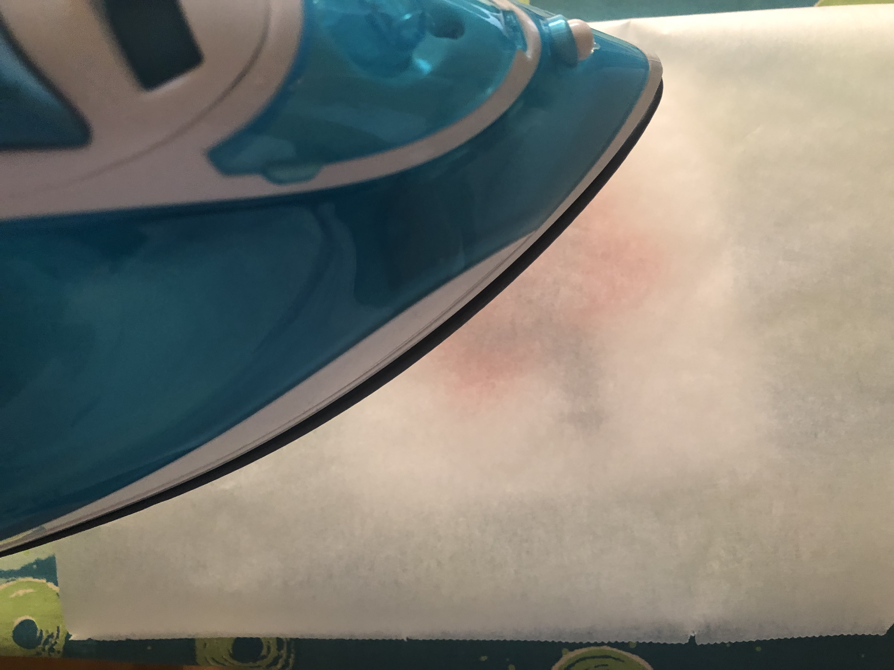

Efterårsblade

Efteråret er her og det betyder nemlig hygge med familien, og perle plader med børnene. Pynt dit hjem med flotte efterårs blade lavet af perler.
Dette skal du bruge
- En perleplade der har målene 29*29
- Brune perler = 41 stk.
- Orange perler = 136 stk.
- Røde perler = 48 stk.
- Strygejern og strge bræt
- Bagepapir
- En bog eller noget andet tungt og flat
- Køkkenrulle
- En skål med vand
- Blade
- Plasticpose eller en anden form for underlag.

Sådan gør du
Step 1.
Start med at lave kanten omkring bladet og grenene inde i bladet og stilken.

Step 2.
Placere de røde perler, de røde perler er der for at skabe kontrast med de orange.

Step 3.
Udfyld det sidste med orange perler.

Step 4.
Tag dit strygejern, din perleplade og bagepapiret. Placer bagepapiret oven på perlepladen og stryg forsigtigt perlepladen til perlerne er smeltet sammen. Når de er det på den ene side, vender du perlepladen på hovedet så bladet ligger for sig selv. Lig nu bagepapiret oven på bladet, og stryg den anden side også.
Step 5.
Bladet skal se således ud når det er strøget.

Step 6.
Tag noget sytråd og bind bladet op evt. i træ, i vinduskarmen eller et elet andet sted. De uhyggelige græskar kan du finde under okt. 2019 under "Tidligere udgaver"

Må vi se dit resultat?
Når du har lavet denne DIY, eller andre fra vores magasin vil vi meget gerne se det, så hvis du tager et billede af det, deler det på instagram med #Creacirklen bliver vi meget glade. Du kan samtidig se andres DIY’s under ”læserenes krativitet” her på siden som har benyttet #Creacirklen.